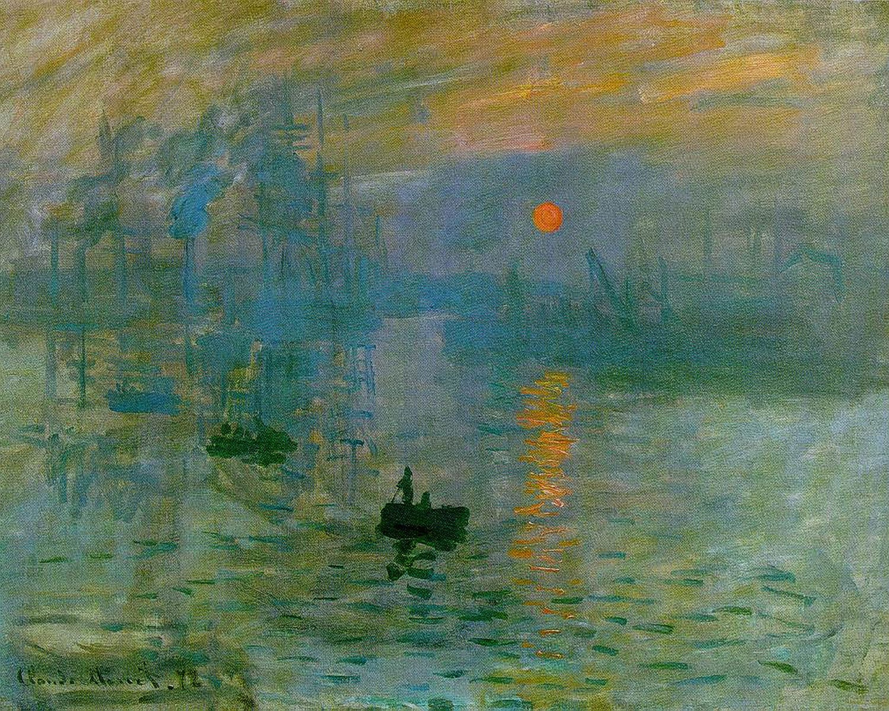

Maritime Hush
An Ekphrastic Poem
volume_up
When night is indistinguishable from day,
An unblinking, bloodshot eye
Condescends all other bodies,
The collapsing rays bleed into the
Horizon,
Gushing light leaks and spills gently over
The blue disarray.
Constrasts in this great soil-pan create a
Tranquil uncertainty,
But rather the stove sits above,
In this dreamy reality, a crude mirror dictates
Expression.
From intricacy, great lucidity wavers to the shore.
Doomed shadows advanced within the
Promiscuous sea,
From an infinite distance away
Sublime figures scratch Heaven's back
While resting on Gaea's head.
This scene of impending calamity
Gently holds in its soggy, bloodied hands
A thousand dreams of a young fisherman,
Which fall like raindrops into a
Pool of lives unlived.